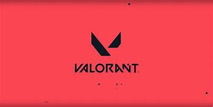
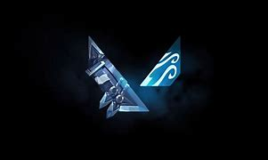
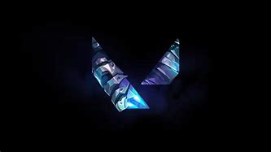
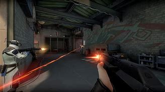

VALORANT DEFINITION
Valorant (stylized as VALORANT) is a free-to-play first-person hero shooter developed and published by Riot Games, for Microsoft Windows. First teased under the codename Project A in October 2019, the game began a closed beta period with limited access on April 7, 2020, followed by an official release on June 2, 2020. The development of the game started in 2014.
VALORANT GAMEPLAY
Valorant is a team-based first-person hero shooter set in the near future.[2][3][4][5] Players play as one of a set of agents, characters designed based on several countries and cultures around the world.[5] In the main game mode, players are assigned to either the attacking or defending team with each team having five players on it. Agents have unique abilities, each requiring charges, as well as a unique ultimate ability that requires charging through kills, deaths, orbs, or spike actions. Every player starts each round with a "classic" pistol and one or more "signature ability" charges.[3] Other weapons and ability charges can be purchased using an in-game economic system that awards money based on the outcome of the previous round, any kills the player is responsible for, and any actions taken with the spike. The game has an assortment of weapons including secondary guns like sidearms and primary guns like submachine guns, shotguns, machine guns, assault rifles and sniper rifles.[6][7] There are automatic and semi-automatic weapons that each have a unique shooting pattern that has to be controlled by the player to be able to shoot accurately.[7] Different agents allow players to find more ways to plant the Spike and style on enemies with scrappers, strategists, and hunters of every description. It currently offers 16 agents to choose from.[8][9] They are Brimstone, Viper, Omen, Cypher, Sova, Sage, Phoenix, Jett, Raze, Breach, Reyna, Killjoy, Skye, Yoru, Astra, and KAY/O.
COMPETITIVE
Competitive matches are the same as unranked matches with the addition of a win-based ranking system that assigns a rank to each player after 5 games are played. Before you can play in competitive games, you will need to win 10 unrated matches beforehand.[13] In July 2020, Riot introduced a "win by two" condition for competitive matches, where instead of playing a single sudden death round at 12-12, teams will alternate playing rounds on attack and defense in overtime until a team claims victory by securing a two-match lead. Each overtime round gives players the same amount of money to purchase guns and abilities, as well as approximately half of their ultimate ability charge. After each group of two rounds, players may vote to end the game in a draw, requiring 6 players after the first set, 3 after the second, and thereafter only 1 player to agree to a draw. The competitive ranking system ranges from iron to radiant. Every rank but Immortal and Radiant has 3 tiers.[14][12] Immortal & Radiant are reserved for top 500 players in which there is a number associated to their rank allowing players in the top 500 to have a metric in which they can compare how they rank up to others at their level.[15]
DEATH MATCH
The Deathmatch mode was introduced on August 5, 2020.[16] 14 players enter a 9-minute free-for-all match and the first person to reach 40 kills or the player who has the most kills when time is up wins the match. Players spawn in with a random agent, and all abilities are disabled during the match which indulges pure gunplay. Green health packs drop on every kill, which set the player at maximum health, armor, and ammunition, unless the player is using a machine gun, which only gives the player an additional 30 bullets.[17]